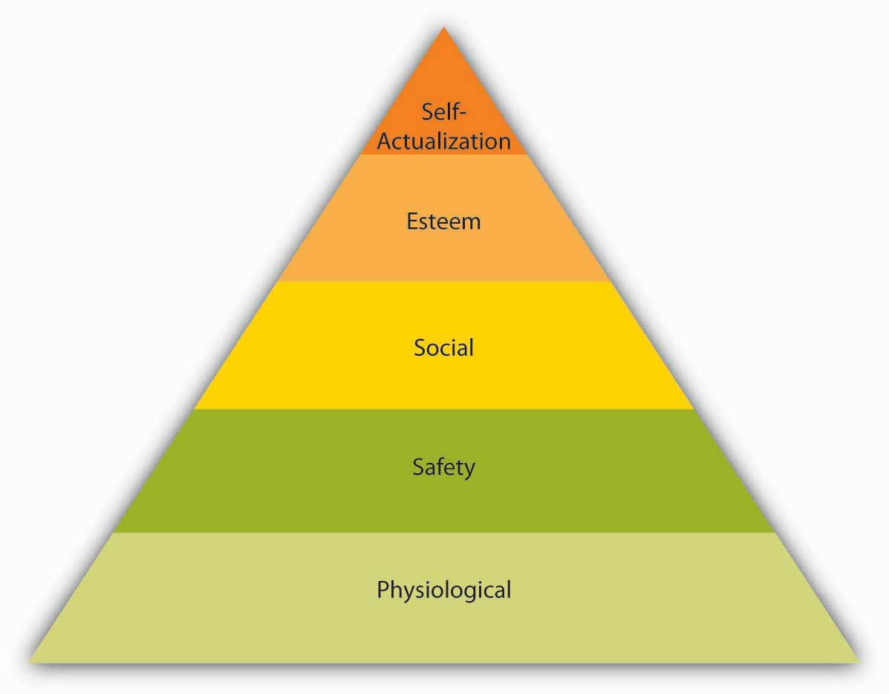

Reading this chapter will help you do the following:
MotivationThis is defined as “the intention of achieving a goal, leading to goal-directed behavior.” is defined as “the intention of achieving a goal, leading to goal-directed behavior.”Columbia encyclopedia. (2004). New York: Columbia University Press. When we refer to someone as being motivated, we mean that the person is trying hard to accomplish a certain task. Motivation is clearly important for someone to perform well. However, motivation alone is not sufficient. AbilityThe characteristic of having the skills and knowledge required to perform the job.—having the skills and knowledge required to perform the job—is also important and is sometimes the key determinant of effectiveness. Finally, environmental factors—having the resources, information, and support one needs to perform well—are also critical to determine performance.
Figure 14.2 The P-O-L-C Framework

What makes employees willing to “go the extra mile” to provide excellent service, market a company’s products effectively, or achieve the goals set for them? Answering questions like this is of utmost importance to understand and manage the work behavior of our peers, subordinates, and even supervisors. As with many questions involving human beings, the answers are anything but simple. Instead, there are several theories explaining the concept of motivation.
Figure 14.3

According to this equation, motivation, ability, and environment are the major influences over employee performance.
Source: Mitchell, T. R. (1982). Motivation: New directions for theory, research, and practice. The Academy of Management Review, 7, 80–88; Porter, L. W. & Lawler, E. E. (1968). Managerial attitudes and performance. Homewood, IL: Dorsey Press
It is unique to hear about a CEO who studies happiness and motivation and builds those principles into the company’s core values or about a company with a 5-week training course and an offer of $2,000 to quit anytime during that 5 weeks if you feel the company is not a good fit. Top that off with an on-site life coach who also happens to be a chiropractor, and you are really talking about something you don’t hear about every day. Zappos is known as much for its 365-day return policy and free shipping as it is for its innovative corporate culture. Although acquired in 2009 by Amazon (NASDAQ: AMZN), Zappos managed to move from number 23 in 2009 on Fortune magazine’s “100 Best Companies to Work For” list to 15 in 2010.
Performance is a function of motivation, ability, and the environment in which you work. Zappos seems to be creating an environment that encourages motivation and builds inclusiveness. The company delivers above and beyond basic workplace needs and addresses the self-actualization needs that most individuals desire from their work experience. CEO Tony Hsieh believes that the secret to customer loyalty is to make a corporate culture of caring a priority. This is reflected in the company’s 10 core values and its emphasis on building a team and a family. During the interview process, applicants are asked questions relating to the company’s values, such as gauging their own weirdness, open-mindedness, and sense of family. Although the offer to be paid to quit during the training process has increased from its original number of $400, only 1% of trainees take the offer. Work is structured differently at Zappos as well. For example, there is no limit to the time customer service representatives spend on a phone call, and they are encouraged to make personal connections with the individuals on the other end rather than try to get rid of them.
Although Zappos has over 1,300 employees, the company has been able to maintain a relatively flat organizational structure and prides itself on its extreme transparency. In an exceptionally detailed and lengthy letter to employees, Hsieh spelled out what the new partnership with Amazon would mean for the company, what would change, and more important, what would remain the same. As a result of this type of company structure, individuals have more freedom, which can lead to greater satisfaction.
Although Zappos pays its employees well and offers attractive benefits such as employees receiving full health-care coverage and a compressed workweek, the desire to work at Zappos seems to go beyond that. As Hsieh would say, happiness is the driving force behind almost any action an individual takes. Whether your goals are for achievement, affiliation, or simply to find an enjoyable environment in which to work, Zappos strives to address these needs.
Case written by [citation redacted per publisher request]. Based on information from Robischon, N. (2009, July 22). Amazon buys Zappos for $847 million. Fast Company. Retrieved February 28, 2010, from http://www.fastcompany.com/blog/noah-robischon/editors-desk/amazon -buys-zappos-807-million; Walker, A. (2009, March 14). Zappos’ Tony Hsieh on Twitter, phone calls and the pursuit of happiness. Fast Company. Retrieved February 27, 2010, from http://www.fastcompany.com/blog/alissa-walker/member-blog/tony-hsiehs-zapposcom; Happy feet—Inside the online shoe utopia. (2009, September 14). New Yorker. Retrieved February 28, 2010, from http://about.zappos.com/press-center/media-coverage/happy-feet-inside-online-shoe-utopia; 100 best companies to work for. (2010, February 8). Fortune. Retrieved February 26, 2010, from http://money.cnn.com/magazines/fortune/bestcompanies/2010/snapshots/15.html.
The earliest answer to motivation involved understanding individual needs. Specifically, early researchers thought that employees try hard and demonstrate goal-driven behavior to satisfy needs. For example, an employee who is always walking around the office talking to people may have a need for companionship and his behavior may be a way of satisfying this need. There are four major theories in the need-based category: Maslow’s hierarchy of needs, ERG theory, Herzberg’s dual factor theory, and McClelland’s acquired needs theory.
Abraham Maslow is among the most prominent psychologists of the 20th century and the hierarchy of needs, accompanied by the pyramid representing how human needs are ranked, is an image familiar to most business students and managers. Maslow’s theory is based on a simple premise: Human beings have needs that are hierarchically ranked.Maslow, A. H. (1943). A theory of human motivation. Psychological Review, 50, 370–396; Maslow, A. H. (1954). Motivation and personality. New York: Harper. There are some needs that are basic to all human beings, and in their absence, nothing else matters. As we satisfy these basic needs, we start looking to satisfy higher-order needs. Once a lower-level need is satisfied, it no longer serves as a motivator.
The most basic of Maslow’s needs are physiological needsThe need for air, food, and water.. Physiological needs refer to the need for air, food, and water. Imagine being very hungry. At that point, all your behavior may be directed at finding food. Once you eat, though, the search for food ceases and the promise of food no longer serves as a motivator. Once physiological needs are satisfied, people tend to become concerned about safetyThe need to be safe from danger, pain, or an uncertain future.. Are they safe from danger, pain, or an uncertain future? One level up, social needsThe need to bond with other human beings, to be loved, and to form lasting attachments with them. refer to the need to bond with other human beings, to be loved, and to form lasting attachments. In fact, having no attachments can negatively affect health and well-being.Baumeister, R. F., & Leary, M. R. (1995). The need to belong: Desire for interpersonal attachments as a fundamental human motivation. Psychological Bulletin, 117, 497–529. The satisfaction of social needs makes esteem needsThe desire to be respected by one’s peers, feeling important, and being appreciated. more salient. Esteem needs refer to the desire to be respected by one’s peers, feeling important, and being appreciated. Finally, at the highest level of the hierarchy, the need for self-actualizationThe quality of “becoming all you are capable of becoming.” refers to “becoming all you are capable of becoming.” This need manifests itself by acquiring new skills, taking on new challenges, and behaving in a way that will lead to the satisfaction of one’s life goals.
Figure 14.5 Maslow’s Hierarchy of Needs
Source: Adapted from Maslow, A. H. (1954). Motivation and personality. New York: Harper.
Maslow’s hierarchy is a systematic way of thinking about the different needs employees may have at any given point and explains different reactions they may have to similar treatment. An employee who is trying to satisfy her esteem needs may feel gratified when her supervisor praises her. However, another employee who is trying to satisfy his social needs may resent being praised by upper management in front of peers if the praise sets him apart from the rest of the group.
So, how can organizations satisfy their employees’ various needs? By leveraging the various facets of the planning-organizing-leading-controlling (P-O-L-C) functions. In the long run, physiological needs may be satisfied by the person’s paycheck, but it is important to remember that pay may satisfy other needs such as safety and esteem as well. Providing generous benefits, including health insurance and company-sponsored retirement plans, as well as offering a measure of job security, will help satisfy safety needs. Social needs may be satisfied by having a friendly environment, providing a workplace conducive to collaboration and communication with others. Company picnics and other social get-togethers may also be helpful if the majority of employees are motivated primarily by social needs (but may cause resentment if they are not and if they have to sacrifice a Sunday afternoon for a company picnic). Providing promotion opportunities at work, recognizing a person’s accomplishments verbally or through more formal reward systems, job titles that communicate to the employee that one has achieved high status within the organization are among the ways of satisfying esteem needs. Finally, self-actualization needs may be satisfied by providing development and growth opportunities on or off the job, as well as by assigning interesting and challenging work. By making the effort to satisfy the different needs each employee may have at a given time, organizations may ensure a more highly motivated workforce.
ERG theory of Clayton Alderfer is a modification of Maslow’s hierarchy of needs.Alderfer, C. P. (1969). An empirical test of a new theory of human needs. Organizational Behavior and Human Performance, 4, 142–175. Instead of the five needs that are hierarchically organized, Alderfer proposed that basic human needs may be grouped under three categories, namely, ExistenceThis need corresponds to Maslow’s physiological and safety needs., RelatednessThis need corresponds to social needs., and GrowthThis need refers to Maslow’s esteem and self-actualization. (see the following figure). Existence need corresponds to Maslow’s physiological and safety needs, relatedness corresponds to social needs, and growth need refers to Maslow’s esteem and self actualization.
Figure 14.7 ERG Theory

Source: Based on Alderfer, C. P. (1969). An empirical test of a new theory of human needs. Organizational Behavior and Human Performance, 4, 142–175.
ERG theory’s main contribution to the literature is its relaxation of Maslow’s assumptions. For example, ERG theory does not rank needs in any particular order and explicitly recognizes that more than one need may operate at a given time. Moreover, the theory has a “frustration-regression” hypothesis, suggesting that individuals who are frustrated in their attempts to satisfy one need may regress to another one. For example, someone who is frustrated by the lack of growth opportunities in his job and slow progress toward career goals may regress to relatedness needs and start spending more time socializing with one’s coworkers. The implication of this theory is that we need to recognize the multiple needs that may be driving an individual at a given point to understand his behavior and to motivate him.
Frederick Herzberg approached the question of motivation in a different way. By asking individuals what satisfies them on the job and what dissatisfies them, Herzberg came to the conclusion that aspects of the work environment that satisfy employees are very different from aspects that dissatisfy them.Herzberg, F., Mausner, B., & Snyderman, B. (1959). The motivation to work. New York: Wiley; Herzberg, F. (1965). The motivation to work among Finnish supervisors. Personnel Psychology, 18, 393–402. Herzberg labeled factors causing dissatisfaction of workers as “hygiene” factors because these factors were part of the context in which the job was performed, as opposed to the job itself. Hygiene factorsThe factors that include company policies, supervision, working conditions, salary, safety, and security on the job. included company policies, supervision, working conditions, salary, safety, and security on the job. To illustrate, imagine that you are working in an unpleasant work environment. Your office is too hot in the summer and too cold in the winter. You are being harassed and mistreated. You would certainly be miserable in such a work environment. However, if these problems were solved (your office temperature is just right and you are not harassed at all), would you be motivated? Most likely, you would take the situation for granted. In fact, many factors in our work environment are things that we miss when they are absent, but take for granted if they are present.
In contrast, motivatorsThe factors that are intrinsic to the job, such as achievement, recognition, interesting work, increased responsibilities, advancement, and growth opportunities. are factors that are intrinsic to the job, such as achievement, recognition, interesting work, increased responsibilities, advancement, and growth opportunities. According to Herzberg’s research, motivators are the conditions that truly encourage employees to try harder.
Figure 14.8 Two-Factor Theory of Motivation

Source: Based on Herzberg, F., Mausner, B., & Snyderman, B. (1959). The motivation to work. New York: Wiley; Herzberg, F. (1965). The motivation to work among Finnish supervisors. Personnel Psychology, 18, 393–402.
Herzberg’s research, which is summarized in the figure above, has received its share of criticism.Cummings, L. L., & Elsalmi, A. M. (1968). Empirical research on the bases and correlates of managerial motivation. Psychological Bulletin, 70, 127–144; House, R. J., & Wigdor, L. A. (1967). Herzberg’s dual-factor theory of job satisfaction and motivation: A review of the evidence and a criticism. Personnel Psychology, 20, 369–389. One criticism relates to the classification of the factors as hygiene or motivator. For example, pay is viewed as a hygiene factor. However, pay is not necessarily a contextual factor and may have symbolic value by showing employees that they are being recognized for their contributions as well as communicating to them that they are advancing within the company. Similarly, quality of supervision or relationships employees form with their supervisors may determine whether they are assigned interesting work, whether they are recognized for their potential, and whether they take on more responsibilities. Despite its limitations, the two-factor theory can be a valuable aid to managers because it points out that improving the environment in which the job is performed goes only so far in motivating employees.
Among the need-based approaches to motivation, Douglas McClelland’s acquired needs theory is the one that has received the greatest amount of support. According to this theory, individuals acquire three types of needs as a result of their life experiences. These needs are need for achievement, need for affiliation, and need for power. All individuals possess a combination of these needs.
Those who have high need for achievementHaving a strong need to be successful. have a strong need to be successful. A worker who derives great satisfaction from meeting deadlines, coming up with brilliant ideas, and planning his or her next career move may be high in need for achievement. Individuals high on need for achievement are well suited to positions such as sales where there are explicit goals, feedback is immediately available, and their effort often leads to success.Harrell, A. M., & Stahl, M. J. (1981). A behavioral decision theory approach for measuring McClelland’s trichotomy of needs. Journal of Applied Psychology, 66, 242–247; Trevis, C. S., & Certo, S. C. (2005). Spotlight on entrepreneurship. Business Horizons, 48, 271–274; Turban, D. B., & Keon, T. L. (1993). Organizational attractiveness: An interactionist perspective. Journal of Applied Psychology, 78, 184–193. Because of their success in lower-level jobs, those in high need for achievement are often promoted to higher-level positions.McClelland, D. C., & Boyatzis, R. E. (1982). Leadership motive pattern and long-term success in management. Journal of Applied Psychology, 67, 737–743. However, a high need for achievement has important disadvantages in management. Management involves getting work done by motivating others. When a salesperson is promoted to be a sales manager, the job description changes from actively selling to recruiting, motivating, and training salespeople. Those who are high in need for achievement may view managerial activities such as coaching, communicating, and meeting with subordinates as a waste of time. Moreover, they enjoy doing things themselves and may find it difficult to delegate authority. They may become overbearing or micromanaging bosses, expecting everyone to be as dedicated to work as they are, and expecting subordinates to do things exactly the way they are used to doing.McClelland, D. C., & Burnham, D. H. (1976). Power is the great motivator. Harvard Business Review, 25, 159–166.
Individuals who have a high need for affiliationThe need to be liked and accepted by others. want to be liked and accepted by others. When given a choice, they prefer to interact with others and be with friends.Wong, M. M., & Csikszentmihalyi, M. (1991). Affiliation motivation and daily experience: Some issues on gender differences. Journal of Personality and Social Psychology, 60, 154–164. Their emphasis on harmonious interpersonal relationships may be an advantage in jobs and occupations requiring frequent interpersonal interaction, such as social worker or teacher. In managerial positions, a high need for affiliation may again serve as a disadvantage because these individuals tend to be overly concerned about how they are perceived by others. Thus, they may find it difficult to perform some aspects of a manager’s job such as giving employees critical feedback or disciplining poor performers.
Finally, those with high need for powerThe desire to influence others and control their environment. want to influence others and control their environment. Need for power may be destructive of one’s relationships if it takes the form of seeking and using power for one’s own good and prestige. However, when it manifests itself in more altruistic forms, such as changing the way things are done so that the work environment is more positive or negotiating more resources for one’s department, it tends to lead to positive outcomes. In fact, need for power is viewed as important for effectiveness in managerial and leadership positions.McClelland, D. C., & Burnham, D. H. (1976). Power is the great motivator. Harvard Business Review, 25, 159–166; Spangler, W. D., & House, R. J. (1991). Presidential effectiveness and the leadership motive profile. Journal of Personality and Social Psychology, 60, 439–455; Spreier, S. W. (2006). Leadership run amok. Harvard Business Review, 84, 72–82.
McClelland’s theory of acquired needs has important implications for motivating employees. While someone who has high need for achievement may respond to goals, those with high need for affiliation may be motivated to gain the approval of their peers and supervisors, whereas those who have high need for power may value gaining influence over the supervisor or acquiring a position that has decision-making authority. And, when it comes to succeeding in managerial positions, individuals who are aware of the drawbacks of their need orientation can take steps to overcome these drawbacks.
Need-based theories describe motivated behavior as individual efforts to meet needs. According to this perspective, the manager’s job is to identify what people need and then to make sure that the work environment becomes a means of satisfying these needs. Maslow’s hierarchy categorizes human needs into physiological, safety, social, esteem, and self-actualization needs. ERG theory is a modification of Maslow’s hierarchy, where the five needs are collapsed into three categories (existence, relatedness, and growth). The two-factor theory differentiates between factors that make people dissatisfied on the job (hygiene factors) and factors that truly motivate employees. Finally, acquired-needs theory argues that individuals possess stable and dominant motives to achieve, acquire power, or affiliate with others. Each of these theories explains characteristics of a work environment that motivate employees.
In contrast to the need-based theories we have covered so far, process-based theories view motivation as a rational process. Individuals analyze their environment, develop reactions and feelings, and react in certain ways. Under this category, we will review equity theory, expectancy theory, and reinforcement theory. We will also discuss the concepts of job design and goal setting as motivational strategies.
Imagine that your friend Marie is paid $10 an hour working as an office assistant. She has held this job for six months. She is very good at what she does, she comes up with creative ways to make things easier in the workplace, and she is a good colleague who is willing to help others. She stays late when necessary and is flexible if asked to rearrange her priorities or her work hours. Now imagine that Marie finds out her manager is hiring another employee, Spencer, who is going to work with her, who will hold the same job title and will perform the same type of tasks. Spencer has more advanced computer skills, but it is unclear whether these will be used on the job. The starting pay for Spencer will be $14 an hour. How would Marie feel? Would she be as motivated as before, going above and beyond her duties?
If your reaction to this scenario was along the lines of “Marie would think it’s unfair,” your feelings may be explained using equity theory.Adams, J. S. (1965). Inequity in social exchange. In L. Berkowitz (Ed.), Advances in experimental social psychology (Vol. 2, 267–299). New York: Academic Press. According to this theory, individuals are motivated by a sense of fairness in their interactions. Moreover, our sense of fairness is a result of the social comparisons we make. Specifically, we compare our inputs and outputs with someone else’s inputs and outputs. We perceive fairness if we believe that the input-to-output ratio we are bringing into the situation is similar to the input/output ratio of a comparison person, or a referentA person we compare ourselves to in equity theory.. Perceptions of inequity create tension within us and drive us to action that will reduce perceived inequity. This process is illustrated in the Equity Formula.
Figure 14.10 The Equity Formula
Source: Based on Adams, J. S. (1965). Inequity in social exchange. In L. Berkowitz (Ed.), Advances in Experimental Social Psychology (Vol. 2, pp. 267–299). New York: Academic Press.
Inputs are the contributions the person feels he or she is making to the environment. In the previous example, the hard work Marie was providing, loyalty to the organization, the number of months she has worked there, level of education, training, and her skills may have been relevant inputs. Outputs are the rewards the person feels he or she is receiving from the situation. The $10 an hour Marie is receiving was a salient output. There may be other outputs, such as the benefits received or the treatment one gets from the boss. In the prior example, Marie may reason as follows: “I have been working here for six months. I am loyal and I perform well (inputs). I am paid $10 an hour for this (outputs). The new guy, Spencer, does not have any experience here (referent’s inputs) but will be paid $14 (referent’s outcomes). This situation is unfair.”
We should emphasize that equity perceptions develop as a result of a subjective process. Different people may look at exactly the same situation and perceive different levels of equity. For example, another person may look at the same scenario and decide that the situation is fair because Spencer has computer skills and the company is paying extra for these skills.
The referent other may be a specific person or an entire category of people. For example, Marie might look at want ads for entry-level clerical workers and see whether the pay offered is in the $10 per hour range; in this case, the referent other is the category of entry-level clerical workers, including office assistants, in Marie’s local area. Referents should be comparable to us—otherwise the comparison is not meaningful. It would be illogical for Marie to compare herself to the CEO of the company, given the differences in the nature of inputs and outcomes. Instead, she would logically compare herself to those performing similar tasks within the same organization or a different organization.
The theory outlines several potential reactions to perceived inequity, which are summarized in Table 14.1 "Potential Responses to Inequity". Oftentimes, the situation may be dealt with perceptually, by distorting our perceptions of our own or referent’s inputs and outputs. For example, Marie may justify the situation by downplaying her own inputs (“I don’t really work very hard on this job”), valuing the outputs more highly (“I am gaining valuable work experience, so the situation is not that bad”), distorting the other person’s inputs (“Spencer really is more competent than I am and deserves to be paid more”) or distorting the other person’s outputs (“Spencer gets $14 but will have to work with a lousy manager, so the situation is not unfair”).
Table 14.1 Potential Responses to Inequity
| Reactions to inequity | Example |
|---|---|
| Distort perceptions | Changing one’s thinking to believe that the referent actually is more skilled than previously thought |
| Increase referent’s inputs | Encouraging the referent to work harder |
| Reduce own input | Deliberately putting forth less effort at work. Reducing the quality of one’s work |
| Increase own outcomes | Negotiating a raise for oneself or using unethical ways of increasing rewards such as stealing from the company |
| Change referent | Comparing oneself to someone who is worse off |
| Leave the situation | Quitting one’s job |
| Seek legal action | Suing the company or filing a complaint if the unfairness in question is under legal protection |
Source: Based on research findings reported in Carrell, M. R., & Dittrich, J. E. (1978). Equity theory: The recent literature, methodological considerations, and new directions. Academy of Management Review, 3, 202–210; Goodman, P. S., & Friedman, A. (1971). An examination of Adams’s theory of inequity. Administrative Science Quarterly, 16, 271–288; Greenberg, J. (1993). Stealing in the name of justice: Informational and interpersonal moderators of theft reactions to underpayment inequity. Organizational Behavior and Human Decision Processes, 54, 81–103; Schmidt, D. R., & Marwell, G. (1972). Withdrawal and reward reallocation as responses to inequity. Journal of Experimental Social Psychology, 8, 207–211.
Another way of addressing perceived inequity is to reduce one’s own inputs or increase one’s own outputs. If Marie works less hard, perceived inequity would be reduced. And, indeed, research shows that people who perceive inequity tend to reduce their work performance or reduce the quality of their inputs.Carrell, M. R., & Dittrich, J. E. (1978). Equity theory: The recent literature, methodological considerations, and new directions. Academy of Management Review, 3, 202–210; Goodman, P. S., & Friedman, A. (1971). An examination of Adams’ theory of inequity. Administrative Science Quarterly, 16, 271–288. Increasing one’s outputs can be achieved through legitimate means such as negotiating a pay raise. At the same time, research shows that those feeling inequity sometimes resort to stealing to balance the scales.Greenberg, J. (1993). Stealing in the name of justice: Informational and interpersonal moderators of theft reactions to underpayment inequity. Organizational Behavior and Human Decision Processes, 54, 81–103. Other options include changing the comparison person (for example, Marie may learn that others doing similar work in different organizations are paid only minimum wage) and leaving the situation by quitting one’s job.Schmidt, D. R., & Marwell, G. (1972). Withdrawal and reward reallocation as responses to inequity. Journal of Experimental Social Psychology, 8, 207–211. We might even consider taking legal action as a potential outcome of perceived inequity. For example, if Marie finds out that the main reason behind the pay gap is gender, she may react to the situation by taking legal action because sex discrimination in pay is illegal in the United States.
What would you do if you felt you were overrewarded? In other words, how would you feel if you were the new employee, Spencer (and you knew that your coworker Marie was being paid $4 per hour less than you)? Originally, equity theory proposed that overrewarded individuals would experience guilt and would increase their effort to restore perceptions of equity. However, research does not provide support for this argument. Instead, it seems that individuals experience less distress as a result of being overrewarded.Austin, W., & Walster, E. (1974). Reactions to confirmations and disconfirmations of expectancies of equity and inequity. Journal of Personality and Social Psychology, 30, 208–216. It is not hard to imagine that individuals find perceptual ways to deal with a situation like this, such as believing that they have more skills and bring more to the situation compared with the referent person. Therefore, research does not support equity theory’s predictions with respect to people who are overpaid.Evan, W. M., & Simmons, R. G. (1969). Organizational effects of inequitable rewards: Two experiments in status inconsistency. IEEE Engineering Management Review, 1, 95–108.
So far, we have assumed that once people feel that the situation is inequitable, they will be motivated to react. However, does inequity disturb everyone equally? Researchers identified a personality trait that explains different reactions to inequity and named this trait equity sensitivityA personality trait that explains different reactions to inequity..Huseman, R. C., Hatfield, J. D., & Miles, E. W. (1987). A new perspective on equity theory: The equity sensitivity construct. Academy of Management Review, 12, 222–234. Equity sensitive individuals experience distress when they feel they are overrewarded or underrewarded and expect to maintain equitable relationships. At the same time, there are some individuals who are benevolentsIndividuals who give without waiting to receive much in return. who give without waiting to receive much in return and entitledsIndividuals who expect to receive a lot without giving much in return. who expect to receive a lot without giving much in return. Thus, the theory is more useful in explaining the behavior of equity sensitive individuals, and organizations will need to pay particular attention to how these individuals view their relationships.
Equity theory looks at perceived fairness as a motivator. However, the way equity theory defines fairness is limited to fairness regarding rewards. Starting in the 1970s, researchers of workplace fairness began taking a broader view of justice. Equity theory deals with outcome fairness, and therefore, it is considered to be a distributive justice theory. Distributive justiceThe degree to which the outcomes received from the organization are fair. refers to the degree to which the outputs received from the organization are fair. Two other types of fairness have been identified: Procedural justice and interactional justice.
Let’s assume that Marie found out she is getting a promotion that will include a pay raise, increased responsibilities, and prestige. If Marie feels she deserves to be promoted, she would perceive high distributive justice (“getting the promotion is fair”). However, Marie later found out that the department manager picked her name out of a hat! What would she feel? She might still like the outcome but feel that the decision-making process was unfair since it wasn’t based on performance. This response would involve feelings of procedural injustice. Procedural justiceThe degree to which fair decision-making procedures are used to arrive at a decision. refers to the degree to which fair decision-making procedures are used. Research shows that employees care about procedural justice for many organizational decisions, including layoffs, employee selection, surveillance of employees, performance appraisals, and pay decisions.Alge, B. J. (2001). Effects of computer surveillance on perceptions of privacy and procedural justice. Journal of Applied Psychology, 86, 797–804; Bauer, T. N., Maertz, C. P., Jr., Dolen, M. R., & Campion, M. A. (1998). Longitudinal assessment of applicant reactions to employment testing and test outcome feedback. Journal of Applied Psychology, 83, 892–903.; Kidwell, R. E. (1995). Pink slips without tears. Academy of Management Executive, 9, 69–70. They tend to care about procedural justice particularly when they do not get the outcome they feel they deserve.Brockner, J., & Wiesenfeld, B. M. (1996). An integrative framework for explaining reactions to decisions: Interactive effects of outcomes and procedures. Psychological Bulletin, 120, 189–208. If Marie does not get the promotion and finds out that management chose the candidate by picking a name out of a hat, she may view this as adding insult to injury. When people do not get the rewards they want, they tend to hold management responsible if procedures are not fair.Brockner, J., Fishman, A. Y., Reb, J., Goldman, B., Spiegel, S., & Garden, C. (2007). Procedural fairness, outcome favorability, and judgments of an authority’s responsibility. Journal of Applied Psychology, 92, 1657–1671.
Research has identified many ways of achieving procedural justice. For example, giving employees advance notice before laying them off, firing them, or disciplining them is perceived as fairer.Kidwell, R. E. (1995). Pink slips without tears. Academy of Management Executive, 9, 69–70. Allowing employees voice into decision making is also important.Alge, B. J. (2001). Effects of computer surveillance on perceptions of privacy and procedural justice. Journal of Applied Psychology, 86, 797–804; Kernan, M. C., & Hanges, P. J. (2002). Survivor reactions to reorganization: Antecedents and consequences of procedural, interpersonal, and informational justice. Journal of Applied Psychology, 87, 916–928; Lind, E. A., Kanfer, R., & Earley, C. P. (1990). Voice, control, and procedural justice: Instrumental and noninstrumental concerns in fairness judgments. Journal of Personality and Social Psychology, 59, 952–959. When designing a performance appraisal system or implementing a reorganization, asking employees for their input may be a good idea because it increases perceptions of fairness. Even when it is not possible to have employees participate, providing explanations is helpful in fostering procedural justice.Schaubroeck, J., May, D. R., & William, B. F. (1994). Procedural justice explanations and employee reactions to economic hardship: A field experiment. Journal of Applied Psychology, 79, 455–460. Finally, people expect consistency in treatment.Bauer, T. N., Maertz, C. P., Jr., Dolen, M. R., & Campion, M. A. (1998). Longitudinal assessment of applicant reactions to employment testing and test outcome feedback. Journal of Applied Psychology, 83, 892–903. If one person is given extra time when taking a test while another is not, individuals would perceive decision making as unfair.
Now let’s imagine Marie’s boss telling her she is getting the promotion. The manager’s exact words: “Yes, Marie, we are giving you the promotion. The job is so simple that we thought even you can handle it.” Now what is Marie’s reaction? The unpleasant feelings she may now experience are explained by interactional justice. Interactional justiceThe degree to which people are treated with respect, kindness, and dignity in interpersonal interactions. refers to the degree to which people are treated with respect, kindness, and dignity in interpersonal interactions. We expect to be treated with dignity by our peers, supervisors, and customers. When the opposite happens, we feel angry. Even when faced with negative outcomes such as a pay cut, being treated with dignity and respect serves as a buffer and alleviates our stress.Greenberg, J. (2006). Losing sleep over organizational injustice: Attenuating insomniac reactions to underpayment inequity with supervisory training in interactional justice. Journal of Applied Psychology, 91, 58–69.
Employers would benefit from paying attention to all three types of justice perceptions. In addition to being the right thing to do, justice perceptions lead to outcomes companies care about. Injustice is directly harmful to employee psychological health and well-being and contributes to stress.Greenberg, J. (2004). Managing workplace stress by promoting organizational justice. Organizational Dynamics, 33, 352–365; Tepper, B. J. (2001). Health consequences of organizational injustice: tests of main and interactive effects. Organizational Behavior and Human Decision Processes, 86, 197–215. High levels of justice create higher levels of employee commitment to organizations, are related to higher job performance, higher levels of organizational citizenship (behaviors that are not part of one’s job description but help the organization in other ways such as speaking positively about the company and helping others), and higher levels of customer satisfaction, whereas low levels of justice lead to retaliation and supporting union certification movements.Blader, S. L. (2007). What leads organizational members to collectivize? Injustice and identification as precursors of union certification. Organization Science, 18, 108–126; Cohen-Charash Y., & Spector P. E. (2001). The role of justice in organizations: A meta-analysis. Organizational Behavior and Human Decision Processes, 86, 278–321; Colquitt, J. A., Conlon, D. E., Wesson, M. J., Porter, C. O. L. H., & Ng, K. Y. (2001). Justice at the millennium: A meta-analytic review of 25 years of organizational justice research. Journal of Applied Psychology, 86, 425–445; Cropanzano, R., Bowen, D. E., & Gilliland, S. W. (2007). The management of organizational justice. Academy of Management Perspectives, 21, 34–48; Masterson, S. S. (2001). A trickle-down model of organizational justice: Relating employees’ and customers’ perceptions of and reactions to fairness. Journal of Applied Psychology, 86, 594–604; Masterson, S. S., Lewis, K., Goldman, B. M., & Taylor, S. M. (2000). Integrating justice and social exchange: The differing effects of fair procedures and treatment on work relationships. Academy of Management Journal, 43, 738–748; Moorman, R. H. (1991). Relationship between organizational justice and organizational citizenship behaviors: Do fairness perceptions influence employee citizenship? Journal of Applied Psychology, 76, 845–855; Skarlicki, D. P., & Folger, R. (1997). Retaliation in the workplace: The roles of distributive, procedural, and interactional justice. Journal of Applied Psychology, 82, 434–443.
According to expectancy theory, individual motivation to put forth more or less effort is determined by a rational calculation.Porter, L. W., & Lawler, E. E. (1968). Managerial attitudes and performance. Homewood: IL: Irwin; Vroom, V. H. (1964). Work and motivation. New York: Wiley. According to this theory, individuals ask themselves three questions.
Figure 14.11 Summary of Expectancy Theory
Source: Based on Porter, L. W., & Lawler, E. E. (1968). Managerial attitudes and performance. Homewood, IL: Irwin; Vroom, V. H. (1964). Work and motivation. New York: Wiley.
The first question is whether the person believes that high levels of effort will lead to desired outcomes. This perception is labeled as expectancyThe extent to which a person believes that high levels of effort will lead to outcomes of interest such as performance or success.. For example, do you believe that the effort you put forth in a class is related to learning worthwhile material and receiving a good grade? If you do, you are more likely to put forth effort.
The second question is the degree to which the person believes that performance is related to secondary outcomes such as rewards. This perception is labeled as instrumentalityThe degree to which the person believes that performance is related to secondary outcomes such as rewards.. For example, do you believe that passing the class is related to rewards such as getting a better job, or gaining approval from your instructor, from your friends, or parents? If you do, you are more likely to put forth effort.
Finally, individuals are also concerned about the value of the rewards awaiting them as a result of performance. The anticipated satisfaction that will result from an outcome is labeled as valenceThe value of the rewards awaiting the person as a result of performance.. For example, do you value getting a better job or gaining approval from your instructor, friends, or parents? If these outcomes are desirable to you, you are more likely to put forth effort.
As a manager, how can you influence these perceptions to motivate employees? In fact, managers can influence all three perceptions.Cook, C. W. (1980). Guidelines for managing motivation. Business Horizons, 23, 61–69. To influence their expectancy perceptions, managers may train their employees, or hire people who are qualified for the jobs in question. Low expectancy may also be due to employees feeling that something other than effort predicts performance, such as political behaviors on the part of employees. In this case, clearing the way to performance and creating an environment in which employees do not feel blocked will be helpful. The first step in influencing instrumentality is to connect pay and other rewards to performance using bonuses, award systems, and merit pay. Publicizing any contests or award programs is helpful in bringing rewards to the awareness of employees. It is also important to highlight that performance and not something else is being rewarded. For example, if a company has an employee-of-the-month award that is rotated among employees, employees are unlikely to believe that performance is being rewarded. In the name of being egalitarian, such a reward system may actually hamper the motivation of highest performing employees by eroding instrumentality. Finally, to influence valence, managers will need to find out what their employees value. This can be done by talking to employees, or surveying them about what rewards they find valuable.
Reinforcement theory is based on the work of Ivan Pavlov in behavioral conditioning and the later work B. F. Skinner did on operant conditioning.Skinner, B. F. (1953). Science and human behavior. New York: Free Press. According to this theory, behavior is a function of its consequences. Imagine that even though no one asked you to, you stayed late and drafted a report. When the manager found out, she was ecstatic and took you out to lunch and thanked you genuinely. The consequences following your good deed were favorable, and therefore you are more likely to do similar good deeds in the future. In contrast, if your manager had said nothing about it and ignored the sacrifice you made, you would be less likely to demonstrate similar behaviors in the future, or your behavior would likely become extinct.
Despite the simplicity of reinforcement theory, how many times have you seen positive behavior ignored or, worse, negative behavior rewarded? In many organizations, this is a familiar scenario. People go above and beyond the call of duty, and yet their behaviors are ignored or criticized. People with disruptive habits may receive no punishments because the manager is afraid of the reaction the person will give when confronted. They may even receive rewards such as promotions so that the person is transferred to a different location and becomes someone else’s problem! Moreover, it is common for people to be rewarded for the wrong kind of behavior. Steven Kerr labeled this phenomenon as “the folly of rewarding A while hoping for B.”Kerr, S. (1995). On the folly of rewarding A while hoping for B. Academy of Management Executive, 9, 7–14. For example, a company may make public statements about the importance of quality. Yet, they choose to reward shipments on time regardless of the number of known defects contained in the shipments. As a result, employees are more likely to ignore quality and focus on hurrying the delivery process.
Figure 14.12 Reinforcement Methods
Reinforcement theory describes four interventions to modify employee behavior. Two of these are methods of increasing the frequency of desired behaviors while the remaining two are methods of reducing the frequency of undesired behaviors.
Positive reinforcementReinforcement that involves making sure that behavior is met with positive consequences. is a method of increasing the desired behavior.Beatty, R. W., & Schneier, C. E. (1975). A case for positive reinforcement. Business Horizons, 18, 57–66. Positive reinforcement involves making sure that behavior is met with positive consequences. Praising an employee for treating a customer respectfully is an example of positive reinforcement. If the praise immediately follows the positive behavior, the employee will see a link between behavior and positive consequences and will be motivated to repeat similar behaviors.
Negative reinforcementReinforcement that involves removal of unpleasant outcomes once desired behavior is demonstrated. is also used to increase the desired behavior. Negative reinforcement involves removal of unpleasant outcomes once desired behavior is demonstrated. Nagging an employee to complete a report is an example of negative reinforcement. The negative stimulus in the environment will remain present until positive behavior is demonstrated. The problem with negative reinforcement may be that the negative stimulus may lead to unexpected behaviors and may fail to stimulate the desired behavior. For example, the person may start avoiding the manager to avoid being nagged.
ExtinctionThe removal of rewards following negative behavior. occurs when a behavior ceases as a result of receiving no reinforcement. For example, suppose an employee has an annoying habit of forwarding e-mail jokes to everyone in the department, cluttering up people’s in-boxes and distracting them from their work. Commenting about the jokes, whether in favorable or unfavorable terms, may be encouraging the person to keep forwarding them. Completely ignoring the jokes may reduce their frequency.
PunishmentThe presentation of negative consequences following unwanted behaviors. is another method of reducing the frequency of undesirable behaviors. Punishment involves presenting negative consequences following unwanted behaviors. Giving an employee a warning for consistently being late to work is an example of punishment.
In addition to types of reinforcements, the timing or schedule on which reinforcement is delivered has a bearing on behavior.Beatty, R. W., & Schneier, C. E. (1975). A case for positive reinforcement. Business Horizons, 18, 57–66. Reinforcement is presented on a continuous scheduleA schedule in which reinforcers follow all instances of positive behavior. if reinforcers follow all instances of positive behavior. An example of a continuous schedule would be giving an employee a sales commission every time he makes a sale. Fixed ratio schedulesA schedule in which reinforcers reward every nth time the right behavior is demonstrated. involve providing rewards every nth time the right behavior is demonstrated, for example, giving the employee a bonus for every 10th sale he makes. Fixed interval schedulesA schedule in which reinforcers reward after a specified period of time. involve providing a reward after a specified period of time, such as giving a sales bonus once a month regardless of how many sales have been made. Variable ratioA schedule that involves providing the reinforcement on a random pattern. involves a random pattern, such as giving a sales bonus every time the manager is in a good mood.
A systematic way in which reinforcement theory principles are applied is called Organizational Behavior Modification (or OB ModA systematic application of reinforcement theory to modify employee behaviors in the workplace.).Luthans, F., & Stajkovic, A. D. (1999). Reinforce for performance: The need to go beyond pay and even rewards. Academy of Management Executive, 13, 49–57. This is a systematic application of reinforcement theory to modify employee behaviors. The model consists of five stages. The process starts with identifying the behavior that will be modified. Let’s assume that we are interested in reducing absenteeism among employees. In step 2, we need to measure the baseline level of absenteeism. In step 3, the behavior’s antecedents and consequences are determined. Why are employees absent? More importantly, what is happening when an employee is absent? If the behavior is being unintentionally rewarded, we may expect these to reinforce absenteeism behavior. For example, suppose that absences peak each month on the days when a departmental monthly report is due, meaning that coworkers and supervisors must do extra work to prepare the report. To reduce the frequency of absenteeism, it will be necessary to think of financial or social incentives to follow positive behavior and negative consequences to follow negative behavior. In step 4, an intervention is implemented. Removing the positive consequences of negative behavior may be an effective way of dealing with the situation, for example, starting the monthly report preparation a few days earlier, or letting employees know that if they are absent when the monthly report is being prepared, their contribution to the report will be submitted as incomplete until they finish it. Punishments may be used in persistent cases. Finally, in step 5 the behavior is measured periodically and maintained. Studies examining the effectiveness of OB Mod have been supportive of the model in general. A review of the literature found that OB Mod interventions resulted in an average of 17% improvement in performance.Stajkovic, A. D., & Luthans, F. (1997). A meta-analysis of the effects of organizational behavior modification on task performance, 1975–1995. Academy of Management Journal, 40, 1122–1149.
Figure 14.14 Stages of OB Modification
Based on information presented in Stajkovic, A. D., & Luthans, F. (1997). A meta-analysis of the effects of organizational behavior modification on task performance, 1975-1995. Academy of Management Journal, 40, 1122–1149.
Many of us assume that the most important motivator at work would be pay. Yet, studies point to a different factor as the major influence over worker motivation: Job design. How a job is designed has a major impact on employee motivation, job satisfaction, commitment to organization, as well as absenteeism and turnover. Job design is just one of the many organizational design decisions managers must make when engaged in the organizing function.
The question of how to properly design jobs so that employees are more productive and more satisfied has received managerial and research attention since the beginning of the 20th century.
Perhaps the earliest attempt to design jobs was presented by Frederick Taylor in his 1911 book Principles of Scientific Management. Scientific management proposed a number of ideas that have been influential in job design. One idea was to minimize waste by identifying the best method to perform the job to ensure maximum efficiency. Another one of the major advances of scientific management was job specializationBreaking down tasks to their simplest components and assigning them to employees so that each person would perform few tasks in a repetitive manner., which entails breaking down tasks to their simplest components and assigning them to employees so that each person would perform few tasks in a repetitive manner. While this technique may be very efficient in terms of automation and standardization, from a motivational perspective, these jobs will be boring and repetitive and therefore associated with negative outcomes such as absenteeism.Campion, M. A., & Thayer, P. W. (1987). Job design: Approaches, outcomes, and trade-offs. Organizational Dynamics, 15, 66–78. Job specialization is also an ineffective way of organizing jobs in rapidly changing environments where employees close to the problem should modify their approach based on the demands of the situation.Wilson, F. M. (1999). Rationalization and rationality From the founding fathers to eugenics. In Organizational behaviour: A critical introduction. Oxford: Oxford University Press.
One of the early alternatives to job specialization was job rotationMoving employees from job to job at regular intervals., which involves moving employees from job to job at regular intervals, thereby relieving the monotony and boredom typical in repetitive jobs. For example, Maids International, a company that provides cleaning services to households and businesses, uses job rotation such that maids cleaning the kitchen in one house would clean the bedroom in another house.Denton, D. K. (1994). …I hate this job. Business Horizons, 37, 46–52. Using this technique, among others, the company was able to reduce its turnover level. In a study conducted in a supermarket, cashiers were rotated to work in different departments. As a result of the rotation, employee stress level was reduced as measured by their blood pressure. Moreover, they reported fewer pain symptoms in their neck and shoulders.Rissen, D., Melin, B., Sandsjo, L., Dohns, I., & Lundberg, U. (2002). Psychophysiological stress reactions, trapezius muscle activity, and neck and shoulder pain among female cashiers before and after introduction of job rotation. Work & Stress, 16, 127–137.
Job rotation has a number of advantages for organizations. It is an effective way for employees to acquire new skills, as the rotation involves cross-training to new tasks; this means that organizations increase the overall skill level of their employees.Campion, M. A., Cheraskin, L., & Stevens, M. J. (1994). Career-related antecedents and outcomes of job rotation. Academy of Management Journal, 37, 1518–1542. In addition, job rotation is a means of knowledge transfer between departments.Kane, A. A., Argote, L., & Levine, J. M. (2005). Knowledge transfer between groups via personnel rotation: Effects of social identity and knowledge quality. Organizational Behavior and Human Decision Processes, 96, 56–71. For the employees, rotation is a benefit because they acquire new skills, which keeps them marketable in the long run.
Anecdotal evidence suggests that companies successfully rotate high-level employees to train their managers and increase innovativeness in the company. For example, Nokia uses rotation at all levels, such as assigning lawyers to act as country managers or moving network engineers to handset design. These approaches are thought to bring a fresh perspective to old problems.Wylie, I. (May 2003). Calling for a renewable future. Fast Company, 70, 46–48. India’s information technology giant Wipro, which employs about 80,000 employees, uses a 3-year plan to groom future leaders of the company by rotating them through different jobs.Ramamurti, R. (2001). Wipro’s Chairman Azim Premji on Building a world-class Indian company. Academy of Management Executive, 15, 13–19.
Job enlargementExpanding the tasks performed by employees to add more variety. refers to expanding the tasks performed by employees to add more variety. Like job rotation, job enlargement can reduce boredom and monotony as well as use human resources more effectively. When jobs are enlarged, employees view themselves as being capable of performing a broader set of tasks.Parker, S. K. (1998). Enhancing role breadth self-efficacy: The roles of job enrichment and other organizational interventions. Journal of Applied Psychology, 83, 835–852. Job enlargement is positively related to employee satisfaction and higher-quality customer services, and it increases the chances of catching mistakes.Campion, M. A., & McClelland, C. L. (1991). Interdisciplinary examination of the costs and benefits of enlarged jobs: A job design quasi-experiment. Journal of Applied Psychology, 76, 186–198. At the same time, the effects of job enlargement may depend on the type of enlargement. For example, exclusively giving employees simpler tasks had negative consequences on employee satisfaction with the job of catching errors, whereas giving employees more tasks that require them to be knowledgeable in different areas seemed to have more positive effects.Campion, M. A., & McClelland, C. L. (1993). Follow-up and extension of the interdisciplinary costs and benefits of enlarged jobs. Journal of Applied Psychology, 78, 339–351.
Job enrichmentA job redesign technique that allows workers more control over how they perform their own tasks. is a job redesign technique that allows workers more control over how they perform their own tasks, giving them more responsibility. As an alternative to job specialization, companies using job enrichment may experience positive outcomes such as reduced turnover, increased productivity, and reduced absences.McEvoy, G. M., & Cascio, W. F. (1985). Strategies for reducing employee turnover. Journal of Applied Psychology, 70, 342–353; Locke, E. A., Sirota, D., & Wolfson, A. D. (1976). An experimental case study of the successes and failures of job enrichment in a government agency. Journal of Applied Psychology, 61, 701–711. This may be because employees who have the authority and responsibility over their own work can be more efficient, eliminate unnecessary tasks, take shortcuts, and overall increase their own performance. At the same time, there is some evidence that job enrichment may sometimes cause employees to be dissatisfied.Locke, E. A., Sirota, D., & Wolfson, A. D. (1976). An experimental case study of the successes and failures of job enrichment in a government agency. Journal of Applied Pscyhology, 61, 701–711. The reason may be that employees who are given additional autonomy and responsibility may expect greater levels of pay or other types of compensation, and if this expectation is not met, they may feel frustrated. One more thing to remember is that job enrichment may not be suitable for all employees.Cherrington, D. J., & Lynn, E. J. (1980). The desire for an enriched job as a moderator of the enrichment-satisfaction relationship. Organizational Behavior and Human performance, 25, 139–159; Hulin, C. L., & Blood, M. R. (1968). Job enlargement, individual differences, and worker responses. Psychological Bulletin, 69, 41–55. Not all employees desire to have control over how they work, and if they do not have this desire, they may feel dissatisfied in an enriched job.
The job characteristics modelA model that describes five core job dimensions leading to three critical psychological states, which lead to work-related outcomes. is one of the most influential attempts to design jobs to increase their motivational properties.Hackman, J. R., & Oldham, G. R. (1975). Development of the job diagnostic survey. Journal of Applied Psychology, 60, 159–170. Proposed in the 1970s by Hackman and Oldham, the model describes five core job dimensions, leading to three critical psychological states, which lead to work-related outcomes. In this model, shown in the following figure, there are five core job dimensions.
Figure 14.16 Job Characteristics Model
Adapted from Hackman, J. R., & Oldham, G. R. (1975). Development of the job diagnostic survey. Journal of Applied Psychology, 60, 159–170.
Skill varietyThe extent to which the job requires the person to use multiple high-level skills. refers to the extent to which the job requires the person to use multiple high-level skills. A car wash employee whose job consists of directing employees into the automated carwash demonstrates low levels of skill variety, whereas a car wash employee who acts as a cashier, maintains carwash equipment, and manages the inventory of chemicals demonstrates high skill variety.
Task identityThe degree to which the person is in charge of completing an identifiable piece of work from start to finish. refers to the degree to which the person completes a piece of work from start to finish. A Web designer who designs parts of a Web site will have low task identity because the work blends in with other Web designers’ work, and in the end, it will be hard for the person to claim responsibility for the final output. The Webmaster who designs the entire Web site will have high task identity.
Task significanceThe degree to which the person’s job substantially affects other people’s work, health, or well-being. refers to whether the person’s job substantially affects other people’s work, health, or well-being. A janitor who cleans the floor at an office building may find the job low in significance, thinking it is not an important job. However, janitors cleaning the floors at a hospital may see their role as essential in helping patients recover in a healthy environment. When they see their tasks as significant, employees tend to feel that they are making an impact on their environment and their feelings of self worth are boosted. Grant, A. M. (2008). The significance of task significance: Job performance effects, relational mechanisms, and boundary conditions. Journal of Applied Psychology, 93, 108–124.
AutonomyThe degree to which the person has the freedom to decide how to perform one’s tasks. is the degree to which the person has the freedom to decide how to perform tasks. As an example, a teacher who is required to follow a predetermined textbook, cover a given list of topics, and use a specified list of classroom activities has low autonomy, whereas a teacher who is free to choose the textbook, design the course content, and use any materials she sees fit has higher levels of autonomy. Autonomy increases motivation at work, but it also has other benefits. Autonomous workers are less likely to adopt a “this is not my job” attitude and instead be proactive and creative.Morgeson, F. P., Delaney-Klinger, K., & Hemingway, M. A. (2005). The importance of job autonomy, cognitive ability, and job-related skill for predicting role breadth and job performance. Journal of Applied Psychology, 90, 399–406; Parker, S. K., Wall, T. D., & Jackson, P. R. (1997). “That's not my job”: Developing flexible employee work orientations. Academy of Management Journal, 40, 899–929; Parker, S. K., Williams, H. M., & Turner, N. (2006). Modeling the antecedents of proactive behavior at work. Journal of Applied Psychology, 91, 636–652; Zhou, J. (1998). Feedback valence, feedback style, task autonomy, and achievement orientation: Interactive effects on creative performance. Journal of Applied Psychology, 83, 261–276. Giving employees autonomy is also a great way to train them on the job. For example, Gucci’s CEO Robert Polet describes autonomy he received while working at Unilever as the key to his development of leadership talents.Gumbel, P. (2008, January 21). Galvanizing Gucci. Fortune, 157(1), 80–88.
FeedbackThe degree to which the person learns how effective he or she is being at work. refers to the degree to which the person learns how effective he or she is at work. Feedback may come from other people such as supervisors, peers, subordinates, customers, or from the job. A salesperson who makes informational presentations to potential clients but is not informed whether they sign up has low feedback. If this salesperson receives a notification whenever someone who has heard his presentation becomes a client, feedback will be high.
The mere presence of feedback is not sufficient for employees to feel motivated to perform better, however. In fact, in about one-third of the cases, feedback was detrimental to performance.Kluger, A. N., & DeNisi, A. (1996). The effects of feedback interventions on performance: A historical review, a meta-analysis, and a preliminary feedback intervention theory. Psychological Bulletin, 119, 254–284. In addition to whether feedback is present, the character of the feedback (positive or negative), whether the person is ready to receive the feedback, and the manner in which feedback was given will all determine whether employees feel motivated or demotivated as a result of feedback.
Goal setting theory Locke, E. A., & Latham, G. P. (1990). A theory of goal setting and task performance. Englewood Cliffs, NJ: Prentice-Hall. is one of the most influential and practical theories of motivation. It has been supported in over 1,000 studies with employees, ranging from blue-collar workers to research and development employees, and there is strong evidence that setting goals is related to performance improvements.Ivancevich, J. M., & McMahon, J. T. (1982). The effects of goal setting, external feedback, and self-generated feedback on outcome variables: A field experiment. Academy of Management Journal, 25, 359–372; Latham, G. P., & Locke, E. A. (2006). Enhancing the benefits and overcoming the pitfalls of goal setting. Organizational Dynamics, 35, 332–340; Umstot, D. D., Bell, C. H., & Mitchell, T. R. (1976). Effects of job enrichment and task goals on satisfaction and productivity: Implications for job design. Journal of Applied Psychology, 61, 379–394. In fact, according to one estimate, goal setting improves performance between 10% and 25% or more.Pritchard, R. D., Roth, P. L., Jones, S. D., Galgay, P. J., & Watson, M. D. (1988). Designing a goal-setting system to enhance performance: A practical guide. Organizational Dynamics, 17, 69–78. On the basis of evidence such as this, thousands of companies around the world are using goal setting in some form, including companies such as Coca-Cola, PricewaterhouseCoopers, Nike, Intel, and Microsoft to name a few.
The mere presence of a goal does not motivate individuals. Think about New Year’s resolutions that you may have made and failed to keep. Maybe you decided that you should lose some weight but then never put a concrete plan in action. Maybe you decided that you would read more but didn’t. Why did you, like 97% of those who set New Year’s resolutions, fail to meet your goal?
Accumulating research evidence indicates that effective goals are SMARTA goal that is specific, measurable, achievable, realistic, and timely.. SMART goals are specific, measurable, achievable, realistic, and timely. Here is a sample SMART goal: Wal-Mart recently set a goal to eliminate 25% of the solid waste from its U.S. stores by the year 2009. This goal meets all the conditions of being SMART if we assume that it is an achievable goal.Heath, D., & Heath, C. (2008, February). Make goals not resolutions. Fast Company, 122, 58–59. Even though it seems like a simple concept, in reality many goals that are set within organizations may not be SMART. For example, Microsoft recently conducted an audit of its goal-setting and performance review system and found that only about 40% of the goals were specific and measurable.Shaw, K. N. (2004). Changing the goal-setting process at Microsoft. Academy of Management Executive, 18, 139–142.
Figure 14.17
Why do SMART goals motivate?
Based on information contained in Latham, G. P. (2004). The motivational benefits of goal setting. Academy of Management Executive, 18, 126–129; Seijts, G. H., & Latham, G. P. (2005). Learning versus performance goals: When should each be used? Academy of Management Executive, 19, 124–131; Shaw, K. N. (2004). Changing the goal-setting process at Microsoft. Academy of Management Executive, 18, 139–142.
There are at least four reasons why goals motivate.Latham, G. P. (2004). The motivational benefits of goal-setting. Academy of Management Executive, 18, 126–129; Seijts, G. H., & Latham, G. P. (2005). Learning versus performance goals: When should each be used? Academy of Management Executive, 19, 124–131; Shaw, K. N. (2004). Changing the goal-setting process at Microsoft. Academy of Management Executive, 18, 139–142. First, goals give us direction; therefore, goals should be set carefully. Giving employees goals that are not aligned with company goals will be a problem because goals will direct employee’s energy to a certain end. Second, goals energize people and tell them not to stop until they reach that point. Third, having a goal provides a challenge. When people have goals and when they reach them, they feel a sense of accomplishment. Finally, SMART goals urge people to think outside the box and rethink how they are working. If a goal is substantially difficult, merely working harder will not get you the results. Instead, you will need to rethink the way you usually work and devise a creative way of working. It has been argued that this is how designers and engineers in Japan came up with the bullet train. Having a goal that went way beyond the current speed of trains prevented engineers from making minor improvements and urged them to come up with a radically different concept.Kerr, S., & Landauer, S. (2004). Using stretch goals to promote organizational effectiveness and personal growth: General Electric and Goldman Sachs. Academy of Management Executive, 18, 134–138.
As with any management technique, there may be some downsides to goal setting.Locke, E. A. (2004). Linking goals to monetary incentives. Academy of Management Executive, 18, 130–133; Pritchard, R. D., Roth, P. L., Jones, S. D., Galgay, P. J., & Watson, M. D. (1988). Designing a goal-setting system to enhance performance: A practical guide. Organizational Dynamics, 17, 69–78; Seijts, G. H., & Latham, G. P. (2005). Learning versus performance goals: When should each be used? Academy of Management Executive, 19, 124–131. First, setting goals for specific outcomes may hamper employee performance if employees lack skills and abilities to reach the goals. In these situations, setting goals for behaviors and for learning may be more effective than setting goals for outcomes. Second, goal setting may motivate employees to focus on a goal and ignore the need to respond to new challenges. For example, one study found that when teams had difficult goals and when employees within the team had high levels of performance orientation, teams had difficulty adapting to unforeseen circumstances.Lepine, J. A. (2005). Adaptation of teams in response to unforeseen change: Effects of goal difficulty and team composition in terms of cognitive ability and goal orientation. Journal of Applied Psychology, 90, 1153–1167. Third, goals focus employee attention on the activities that are measured, which may lead to sacrificing other important elements of performance. When goals are set for production numbers, quality may suffer. As a result, it is important to set goals touching on all critical aspects of performance. Finally, aggressive pursuit of goals may lead to unethical behaviors. Particularly when employees are rewarded for goal accomplishment but there are no rewards whatsoever for coming very close to reaching the goal, employees may be tempted to cheat.
None of these theories are complete by themselves, but each theory provides us with a framework we can use to analyze, interpret, and manage employee behaviors in the workplace, which are important skills managers use when conducting their leading function. In fact, motivation is important throughout the entire P-O-L-C framework because most managerial functions involve accomplishing tasks and goals through others.
Process-based theories use the mental processes of employees as the key to understanding employee motivation. According to equity theory, employees are demotivated when they view reward distribution as unfair. In addition to distributive justice, research identified two other types of fairness (procedural and interactional), which also affect worker reactions and motivation. According to expectancy theory, employees are motivated when they believe that their effort will lead to high performance (expectancy), that their performance will lead to outcomes (instrumentality), and that the outcomes following performance are desirable (valence). Reinforcement theory argues that behavior is a function of its consequences. By properly tying rewards to positive behaviors, eliminating rewards following negative behaviors and punishing negative behaviors, leaders can increase the frequency of desired behaviors. In job design, there are five components that increase the motivating potential of a job: Skill variety, task identity, task significance, autonomy, and feedback. These theories are particularly useful in designing reward systems within a company. Goal-setting theory is one of the most influential theories of motivation. To motivate employees, goals should be SMART (specific, measurable, achievable, realistic, and timely). Setting goals and objectives is a task managers undertake when involved in the planning portion of the P-O-L-C function.
Before the meeting, ask the person to complete a self-appraisal. This is a great way of making sure that employees become active participants in the process and are heard. Complete the performance appraisal form and document your rating using several examples. Be sure that your review covers the entire time since the last review, not just recent events. Handle the logistics. Be sure that you devote sufficient time to each meeting. If you schedule them tightly back to back, you may lose your energy in later meetings. Be sure that the physical location is conducive to a private conversation.
During the meeting, be sure to recognize effective performance through specific praise. Do not start the meeting with a criticism. Starting with positive instances of performance helps establish a better mood and shows that you recognize what the employee is doing right. Give employees opportunities to talk. Ask them about their greatest accomplishments, as well as opportunities for improvement. Show empathy and support. Remember: your job as a manager is to help the person solve performance problems. Identify areas where you can help. Conclude by setting goals and creating an action plan for the future.
After the meeting, continue to give the employee periodic and frequent feedback. Follow through on the goals that were set.
Research shows that receiving feedback is a key to performing well. If you are not receiving enough feedback on the job, it is better to seek it instead of trying to guess how well you are doing.
Giving effective feedback is a key part of a manager’s job. To do so, plan the delivery of feedback before, during, and after the meeting. In addition, there are a number of ways to learn about your own performance. Take the time to seek feedback and act on it. With this information, you can do key things to maximize your success and the success of those you manage.